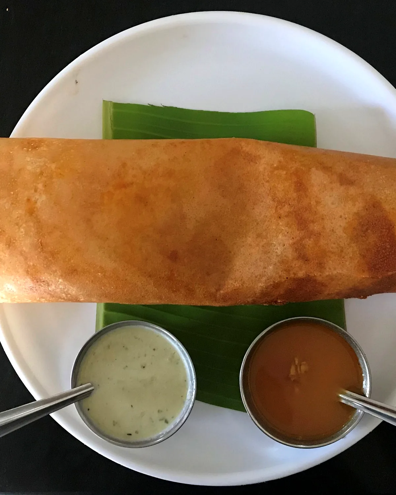
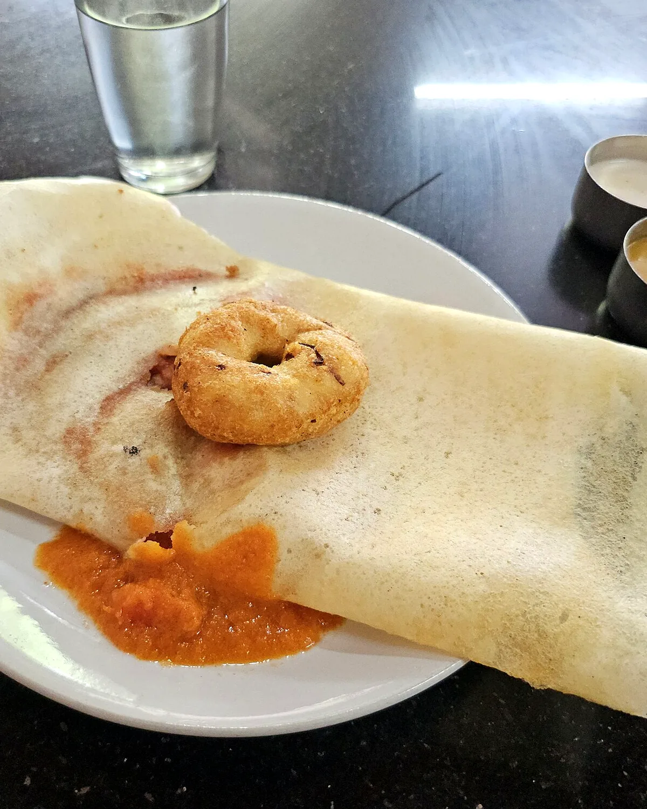
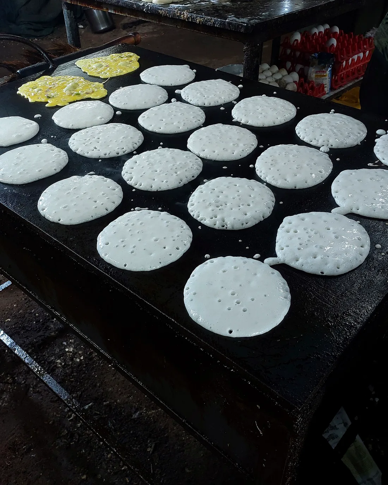

Our Story
A South Indian kitchen,
rooted in ritual.
The day begins before sunrise: rice soaking, urad dal grinding, coconuts cracking and curry leaves hitting hot ghee. At Chutneys, breakfast is not a course — it is a ceremony.
Our concept celebrates the tiffin houses of the South, where stone-ground batter meets a seasoned griddle and every plate arrives with a trio of chutneys. The room is warm, the service unhurried, and the dosa is always crisp at the edge.
Stone-ground
Batter, daily
Slow-simmered
Sambar & rasam
Ghee-roasted
Podi & filter coffee
Restaurant history, founding details and credentials are placeholders for this concept demo and must be verified before publication.
Discover our signatures